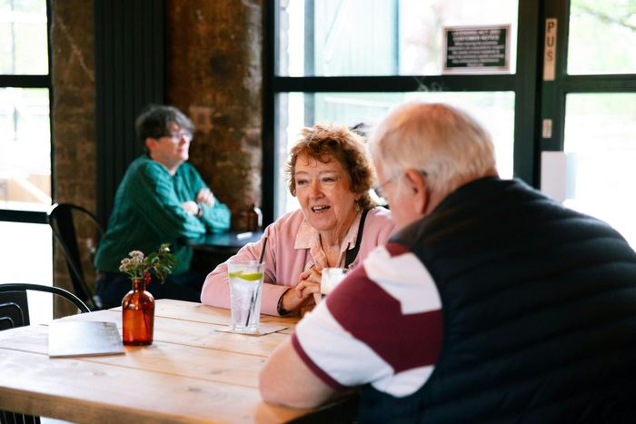
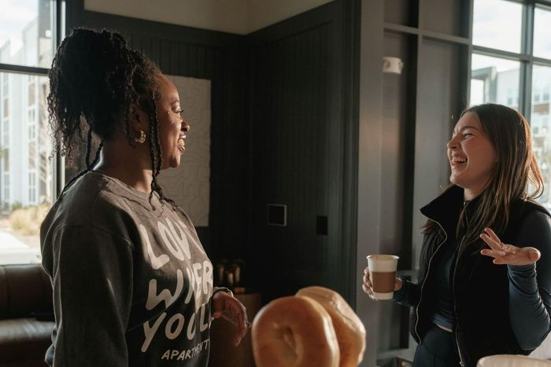

Share a story
When did you last change your mind?
Tell us what made you stop and think: a conversation, a headline, a message. If you work with a community group, charity or university, share what the people you work with come across. Every story shapes our practice examples and research.
For example
- A view you’ve changed, and what changed it
- A rumour or fake that nearly fooled you
- A message that made you pause
- A conversation that opened your mind
Send us your story
Please leave out names and personal details. Want to host a session, research with us or help fund 2ndScan? Say hello too.
hello@2ndscan.com